一.源码传送门：
- Spanned
此文是在此基础上做的讲解,用于加深印象
二.使用
- 初始化
把textview控件传过去即可
append传入要显示的字符
1 | TextView mTextview = findViewById(R.id.text); |
- 设置字体大小
1 | .append("X") |
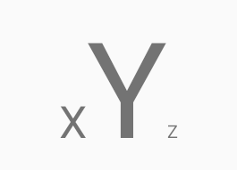
- 前景色、背景色
1 | .setForegroundColor(getColor(R.color.colorAccent1)) |
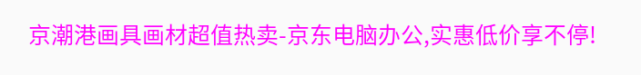
1 | .setBackgroundColor(getColor(R.color.colorAccent1)) |
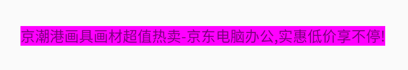
- 设置引用线颜色
1 | .setQuoteColor(getColor(R.color.colorAccent1)) |
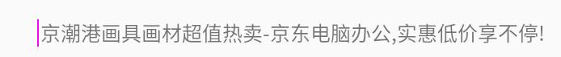
- 设置缩进
1 | .setLeadingMargin(50, /*第一行缩进值*/ 0 /*其余行缩进值*/) |
设置前
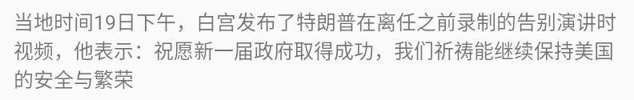
设置后
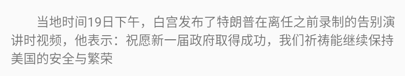
- 设置行高
1 | /* |
设置前
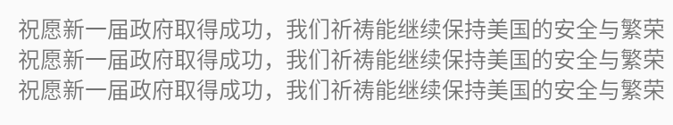
设置后
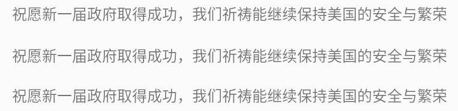
- 字体比例
修改前：
1 | .append(getString(R.string.text)) |
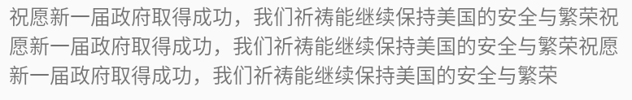
修改后：
1 | .append(getString(R.string.text)) |
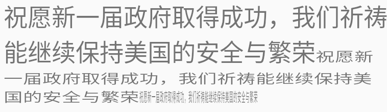
- 删除线、下划线
1 | .setStrikethrough() //删除线 |
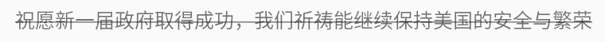
1 | .setUnderline() //下划线 |
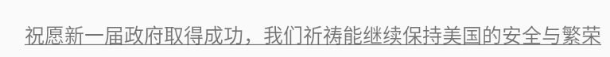
- 设置粗体、斜体
1 | .append(getString(R.string.text)) |
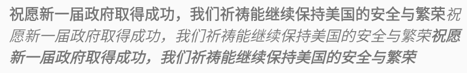
- 设置字体
1 | .append(getString(R.string.text)) |
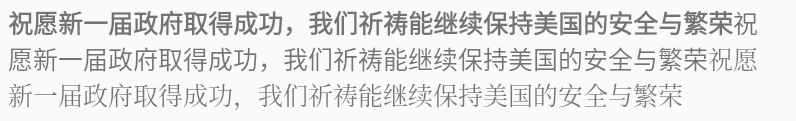
- 设置单独点击事件
1 | .append("点击事件1") |
打印
1 | 2021-01-12 00:29:12.802 13577-13577/com.softwinner.app I/MainActivity.java: [ (MainActivity.java:75)#onClick ] //设置点击事件1 |
- 超链接
1 | .append(getString(R.string.text)) |
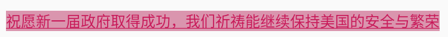
点击会跳转浏览器
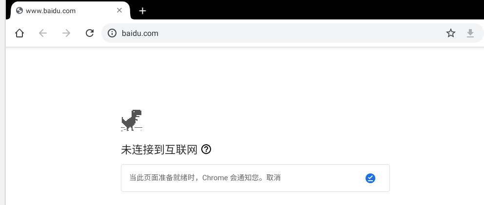
设置模糊
1
2
3
4
5
6
7
8.append(getString(R.string.text))
.setBlur((float) 1, BlurMaskFilter.Blur.SOLID) //设置模糊
.append(getString(R.string.text))
.setBlur((float) 1, BlurMaskFilter.Blur.OUTER) //设置模糊
.append(getString(R.string.text))
.setBlur((float) 1, BlurMaskFilter.Blur.INNER) //设置模糊
.append(getString(R.string.text))
.setBlur((float) 1, BlurMaskFilter.Blur.NORMAL) //设置模糊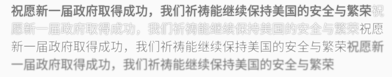
设置阴影
1 | .append(getString(R.string.text)) |
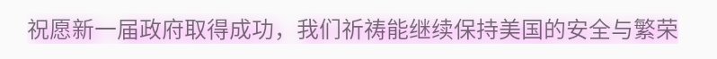
- 追加图片
1 | .append("追加图片") |
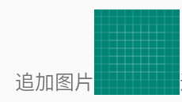
- 追加空格
1 | .append("追加图片") |
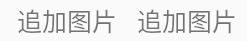

...
...
00:00
00:00
听首歌放松一下！